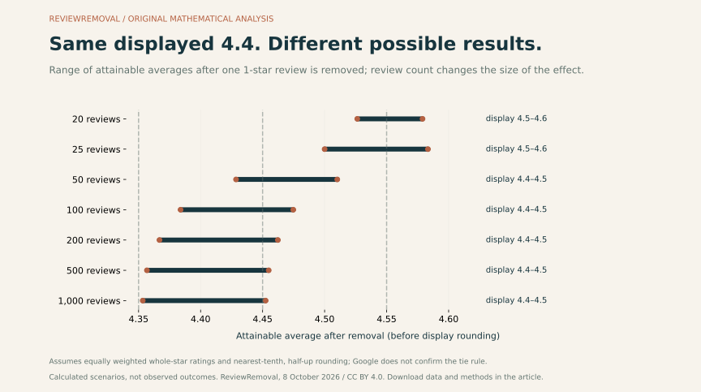
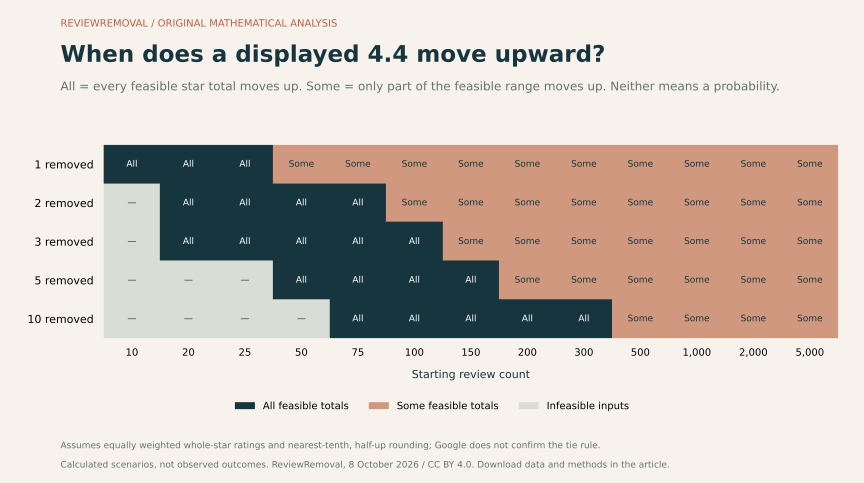
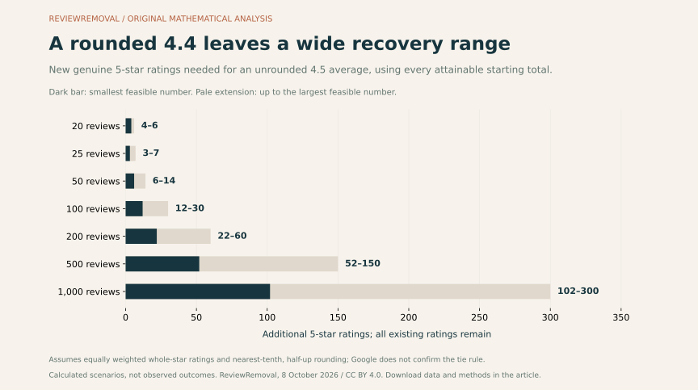

On this page
Removing a review below your current average increases the arithmetic average, provided another rating remains. The displayed score may stay the same. In our model, a business showing 4.4 from 100 reviews can still show 4.4 after one one-star review is removed—or it can show 4.5. The rounded starting score does not contain enough information to tell which outcome applies.
We built a new, openly reproducible dataset to investigate that uncertainty: 1,625 combinations of review count, displayed score and number of one-star removals. Each input is checked against the integer totals that whole-star reviews can actually produce. The results, three original figures and a working calculator are available below.
What kind of study is this?
This is an original mathematical sensitivity analysis, version 1.0, published October 8, 2026. It contains calculated scenarios, not customer records, a survey or a sample of Canadian listings. We assume nearest-tenth rounding with exact halves rounded upward. Google documents its use of an average, but its cited guidance does not specify that tie convention. Treat every display prediction as conditional on that assumption. Google’s scoring explanation
Does removing a Google review improve your rating?
For an equally weighted average, removing a rating below the current average raises it; removing a rating above it lowers it. Removing a rating equal to the average leaves it unchanged. If the removed review is your only rating, there is no remaining average to calculate.
Google says the review score averages all ratings published for that business. An improvement in that underlying average can be smaller than the next displayed tenth, so a successful removal and an unchanged display can coexist. How Google calculates review scores
A numerical benefit does not establish removal eligibility. Google’s reporting process concerns policy violations; a genuine negative experience can remain published. Google’s reporting guidance
What the 1,625 inputs reveal
- 157 inputs were infeasible. They include cases that would remove every review and cases in which a high displayed score cannot coexist with that many one-star reviews.
- 492 feasible inputs always moved to a higher displayed tenth under the model, across every attainable starting star total.
- 976 feasible inputs left uncertainty: some attainable totals moved upward, while others stayed at the starting display.
- None of the feasible inputs in this particular grid ruled out an upward display altogether. That result describes the selected grid, not every possible score or review count. For example, 20 reviews with a displayed 4.4 and one four-star review removed still display 4.4 across the feasible range under this model.
These are counts of selected mathematical inputs. They are not percentages of Canadian businesses, removal success rates, or estimates of how likely an outcome is. We do not assign probabilities to possible star totals.
Two businesses, the same 4.4, different outcomes
Here are two invented but mathematically valid distributions. Both show 4.4 from 100 reviews under our rounding assumption, and both contain exactly one one-star review. No business was sampled for this example.
| Profile | 1-star | 4-star | 5-star | Average before | After removing the 1-star | Model display after |
|---|---|---|---|---|---|---|
| A | 1 | 60 | 39 | 4.3600 | 435 ÷ 99 = 4.3939 | 4.4 |
| B | 1 | 52 | 47 | 4.4400 | 443 ÷ 99 = 4.4747 | 4.5 |
Swipe horizontally to read the complete table.
The lesson is practical: a displayed score and review count cannot always identify the exact effect of removal. Exact counts at each star rating, from a complete and current set of ratings, would allow a more precise arithmetic calculation. Screenshots of the headline score alone leave a range.
Google review removal rating calculator: get a range
Enter the score displayed on Google, the total review count and the reviews you are considering. The calculator checks whether those inputs can coexist and shows the lowest and highest attainable outcomes. It supports removing reviews rated from one to five stars, as long as every review removed has the selected rating.
Why one review matters more at lower volumes
When a business has fewer ratings, each contributes a larger share of its average. Start with the exact, unrounded average R, total count N, removed rating v and number removed k:
New average = (N × R − k × v) ÷ (N − k)
Change in average = k × (R − v) ÷ (N − k)
Both formulas require N > k and the actual unrounded average. Substituting a displayed 4.4 for the unknown exact average produces an estimate.
For an exact average of 4.4, removing one one-star rating raises it by 0.1789 stars with 20 reviews, 0.0343 with 100 reviews, or 0.0034 with 1,000 reviews. Those are changes in the underlying average, before display rounding.



There is a second effect in this chart: having more reviews reduces the impact of one removal, but does not reveal the hidden exact average. At 1,000 reviews, a displayed 4.4 still admits 100 integer star totals, from 4,350 to 4,449. The uncertainty range after removal is therefore still close to one tenth of a star. More review volume and more precise knowledge of the current average are different things.
| Starting reviews | Average after removal | Model display after | Higher display occurs for |
|---|---|---|---|
| 20 | 4.5263–4.5789 | 4.5–4.6 | All feasible totals |
| 25 | 4.5000–4.5833 | 4.5–4.6 | All feasible totals |
| 50 | 4.4286–4.5102 | 4.4–4.5 | Some feasible totals |
| 100 | 4.3838–4.4747 | 4.4–4.5 | Some feasible totals |
| 200 | 4.3668–4.4623 | 4.4–4.5 | Some feasible totals |
| 500 | 4.3567–4.4549 | 4.4–4.5 | Some feasible totals |
| 1,000 | 4.3534–4.4525 | 4.4–4.5 | Some feasible totals |
Swipe horizontally to read the complete table.
A threshold map for profiles showing 4.4
Our second figure evaluates all 65 combinations of the 13 review counts and five removal counts, while fixing the displayed starting score at 4.4. “All” means every feasible integer total produces a higher displayed score. “Some” means an increase depends on the undisclosed starting average. A dash marks inputs that cannot coexist.



The feasibility check catches a useful edge case: a displayed 4.9 from 10 reviews cannot include a one-star rating under this convention. Even if the other nine ratings were all five-star, the total would be 46 and the average 4.6. A calculator that accepts 4.9, 10 reviews and a one-star removal without qualification has accepted an impossible starting distribution.
How many genuine five-star reviews would be needed instead?
Uncertainty also affects recovery estimates. With 100 reviews displaying 4.4, the model allows an integer star total from 435 through 444. Keeping every existing rating, reaching an unrounded average of at least 4.5 would require 12–30 additional five-star ratings. Reaching a model display of at least 4.5 instead would require 2–19. These targets answer different questions.
The first target uses ceil((4.5 × N − S) ÷ 0.5), where S is the existing sum of stars. The display target uses an assumed threshold of 4.45 and ceil((4.45 × N − S) ÷ 0.55). The examples use exact integer arithmetic to avoid floating-point errors at the boundary. Negative results are set to zero.



You cannot control the rating a genuine customer chooses. Use these figures for planning, then invite honest feedback without incentives or demands for a particular score. Google permits review requests and prohibits incentives for posting, changing or removing reviews. Google’s guidance on requesting reviews
Using this study for a Canadian business
The arithmetic applies to a salon in Toronto, an Ontario dental clinic, a Montréal restaurant, a Vancouver accommodation provider or a Calgary contractor in the same way. We have not measured different review patterns by city or province. The Canadian application is the business decision: document a potential policy violation, understand the plausible rating effect, and decide what evidence or help is needed.
Keep three questions separate. Does the content breach the platform’s rules? What happens to the average if it is removed? What evidence supports any expected change in search visibility or sales? Our dataset answers the second question conditionally. For the first, use our review reporting evidence checklist. For published enforcement counts, use our Google Maps moderation compilation.
There is a Canadian reason to preserve independent feedback: in 2015 the Competition Bureau announced a CAD $1.25 million administrative monetary penalty in its Bell agreement involving employee app reviews without employment disclosure. That historical matter involved app stores, not a Google Maps removal case or a current penalty schedule. Competition Bureau’s Bell announcement
If you need help reviewing the evidence, send us the Google review links and number of reviews. Our quoted service is CAD $50 upfront per review plus CAD $125 if successfully removed. An arithmetic improvement is not a forecast of removal eligibility, timing or revenue.
Questions business owners often ask
Why did my Google rating stay the same after a review disappeared?
The average can rise without crossing the next displayed tenth. Other reviews may also have been added, edited or removed. A disappearing review does not by itself establish which moderation action occurred or that the displayed score has updated. Reconcile the review count and visible set before attributing the change.
How long does a Google review score take to update?
Google says a score update after a new review can take up to two weeks. Its cited page does not establish a universal two-week deadline after removal. Our model has no timing component. Google’s score-update guidance
Can removing a four- or five-star review lower the score?
Yes, if its rating is above the current exact average. At an exact 4.4 with 100 reviews, removing one five-star rating produces (440 − 5) ÷ 99 = 4.3939. The average falls, even though the model display remains 4.4.
Does a rating-only review count without any text?
The average concerns published ratings, so the star score is what matters to this calculation. A text-only inventory that misses published rating-only contributions cannot reliably reconstruct the full star total. Google’s definition of the average
Will a higher score guarantee a better Google Maps ranking?
No. Google lists relevance, distance and prominence as local ranking factors. Reviews and positive ratings can contribute, but a specific ranking or traffic change cannot be inferred from these calculations. Google’s local ranking explanation
Do these formulas also calculate a Trustpilot or Booking.com score?
This model concerns an equally weighted average of whole-star Google ratings. Do not apply it to another platform until you establish that platform’s score definition, scale and weighting. See our platform service directory for the appropriate review-reporting route.
Does one star automatically make a review removable?
No. Rating and policy compliance are different facts. Assess the experience, wording and supporting evidence against the relevant policy. Google’s published rules cover issues including fake engagement, conflicts of interest, harassment and personal information. Google Maps content policies
Methods, definitions and limitations
- Grid: 13 counts (10, 20, 25, 50, 75, 100, 150, 200, 300, 500, 1,000, 2,000, 5,000); 25 displayed scores from 2.5 to 4.9 in 0.1 increments; and five removal counts (1, 2, 3, 5, 10). All 1,625 inputs remain in the download, including excluded combinations.
- Feasible star totals: a starting total
Smust be an integer, fit the displayed score’s assumed rounding interval and permitkone-star reviews plusN − kwhole-star ratings from one to five. The capS ≤ 5N − 4kenforces the existence of those one-star reviews. - Display interval: for displayed score
d, totals satisfy(d − 0.05)N ≤ S < (d + 0.05)N, with scores limited to one through five. We use half-up rounding, including the lower boundary and excluding the upper one. This is an assumption; Google’s cited scoring documentation does not confirm its tie rule. - Bounds: after one-star removals the average is
(S − k) ÷ (N − k). This is increasing inS, so its smallest and largest feasible totals give exact attainable extrema. They are not a sampling confidence interval. - Classification: “All” means the minimum post-removal model display is above the starting display; “some” means only the maximum is above it; “none” means even the maximum is not. “Infeasible” has no attainable distribution. We do not count or weight individual star distributions, and do not infer outcome probabilities.
- Independent check: a separate audit enumerates all five-category star histograms for review counts from 2 through 9, then compares analytical bounds against 7,380 count, display, removal-count and removed-star combinations. It also checks all 1,625 exported rows.
- Scope: no reviews were scraped; no private dashboards, client outcomes or city samples were used. Concurrent reviews, edits, delayed displays, incomplete counts and platform implementation details can make a live listing differ from the model.
- Commercial interest: ReviewRemoval sells review-reporting assistance. The analysis contains no evidence that our clients are more likely to obtain removal, higher rankings or additional revenue.
Open data, reproduction and citation
The CSV contains one row per input, explicit feasibility flags, the attainable star-total interval and modelled display bounds. The JSON also records assumptions, grid dimensions and source provenance. Version 1.0 was published October 8, 2026. The complete source code and plotting script are available so a reader can check or extend the calculations.
To reproduce outside this website, put the calculation model, builder and audit in one folder. Run node build-rating-study.cjs, then node audit-rating-study.cjs. Place the plotting script beside the generated JSON and run python plot-rating-study.py with Matplotlib installed. The three SVG and PNG figures will be written beside the data if there is no website assets folder.
Suggested citation
ReviewRemoval (2026). Google review removal and rating changes: a 1,625-scenario study. Version 1.0, October 8, 2026. https://reviewremoval.ca/blog/google-review-removal-rating-impact-study.html. Original deterministic sensitivity analysis, assuming nearest-tenth, half-up display rounding; not an observed Canadian business dataset.
Original model code, generated data and figures are available under CC BY 4.0. Attribute ReviewRemoval, link this article, preserve the rounding assumption and describe the figures as modelled results. External source material retains its own rights. No citation or backlink is required to use the calculator.
Primary sources, checked October 8, 2026
- Google Business Profile Help: understand review scores for local places and businesses — average definition, rating scale and update guidance. Does not specify the exact display-rounding tie convention.
- Google Business Profile Help: report inappropriate reviews — reporting process and removal eligibility.
- Google Maps: prohibited and restricted content — content-policy categories.
- Google Business Profile Help: tips to get more reviews — honest review requests and restrictions on incentives.
- Google Business Profile Help: tips to improve your local ranking — local ranking factors; no outcome prediction for this model.
- Competition Bureau: Bell Canada reaches agreement over online reviews, October 14, 2015 — a historical Canadian app-review enforcement matter, separate from the mathematical dataset.
Working on a specific case? Use the Google review evidence checker, check report and appeal status, or ask our team for Google review removal support in Canada.
Need help with a specific review?
Send the platform and the review link. We’ll assess the details and explain the price before paid work begins.
Let us assess your Google review